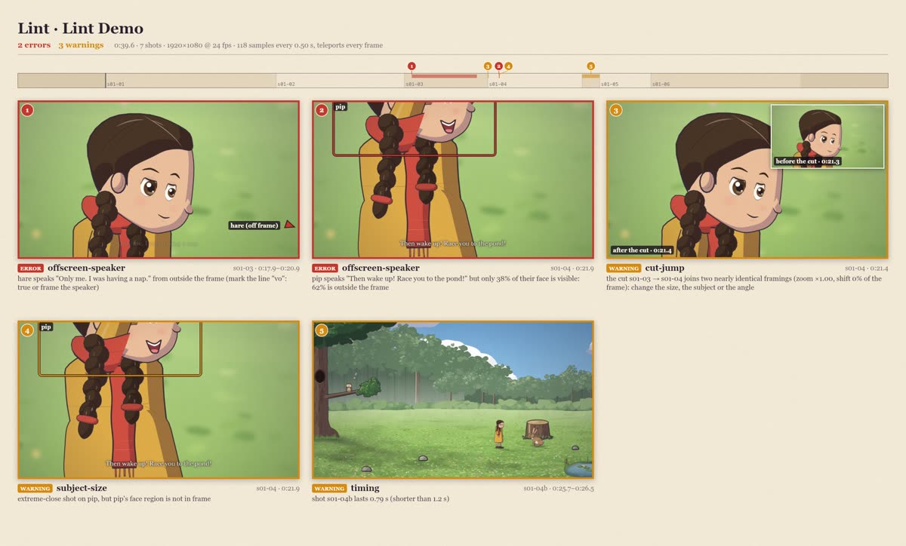

#Lint: staging and editing checks
lint finds the things that make a film look wrong even when every frame renders: a character standing on air or
inside a tree, a speaker out of frame, a head cut by the frame edge, the moon sitting on a head like a halo, a
caption over a face, two near-identical shots cut together, a character who changes pose or place across a cut.
node bin/cinecode.mjs lint films/my-film # → films/my-film/out/lint.json + lint.jpg
node bin/cinecode.mjs lint films/my-film --step=0.5 # sample less often: faster
It compiles the film (unvoiced lines use estimated lengths) and samples it on real frame times: every --step
seconds (default 1/6), every beat and line boundary, and the first and last frame of each shot. Teleports are checked
on every frame. Hits of the same rule, actor and shot less than a second apart merge into one issue spanning their
time range, reported at its worst moment. A framing fault (edge-cut, tangent, halo) counts only when it is held
for 0.5 s in one stretch, so a move sweeping past an edge or a figure turning is not an issue. The command prints every
issue and exits with status 1 when there is at least one error (warnings alone exit 0):
lint 2 errors, 4 warnings → films/lintdemo/out/lint.json, lint.jpg 3.5 s
error offscreen-speaker 1.3 0:17.9 hare speaks "Only me. I was having a nap." from outside the frame (mark the line "vo": true or frame the speaker) (17.9–20.9 s)
error offscreen-speaker 1.4 0:21.9 pip speaks "Then wake up! Race you to the pond!" but only 37% of their face is visible: 63% is outside the frame
warn cut-jump 1.4 0:21.4 the cut 1.3 → 1.4 joins two nearly identical framings (zoom ×1.00, shift 0% of the frame): change the size, the subject or the angle
warn subject-size 1.4 0:21.9 extreme-close shot on pip, but pip's face region is not in frame
warn caption-face 1.4 0:22.4 the caption "Then wake up! Race you to the pond!" sits over pip's face while they speak (86% overlap)
warn timing 1.4b 0:26.1 shot 1.4b lasts 0.79 s (shorter than 1.2 s)
cinecode lint: lint found 2 errors
That is the starter film broken on purpose: two extreme close-ups of Pip in a row while the hare speaks, and a
0.8 s shot (1.4b). Sampling every 0.5 s, it took 3.5 s for 40 s of film; at the default step a few-minute film takes
minutes.
Framing faults come with a fix that was tried. For an edge-cut, tangent or halo, lint recompiles the film
with a camera change (an offset, size, zoom or angle) or with the actor staged a little elsewhere, lints the
shot again, and prints the change only when the fault is gone and no other framing fault came with it. When nothing
simple works, the message says so:
warn tangent 2.5 0:44.8 hollis's outline ends 2 px above the bottom edge of the frame (a tangent): "offset": [0, 0.042] lets the edge cut it clearly (44.6–49.8 s)
warn edge-cut 2.3 0:36.9 pebble's head is cut by the top edge of the frame, 56 px from its eyes: stage pebble about 25 px nearer (y + 25) for this shot to bring it into frame (36.8–41.1 s)
warn halo 9.9 3:06.2 the moon sits on nell's head like a halo (30 px into it): "offset": [0, 0.108] moves nell down, away from it (184.2–190.2 s)
warn edge-cut 10.3 3:34.7 pebble's head is cut by the right edge of the frame, 13 px from its eyes: no "offset" or simple move of pebble clears it here: re-block the shot so pebble's head stays clear of the right edge (210.5–214.7 s)
A camera change goes into the shot's camera block. A staging ("stage pebble about 25 px nearer (y + 25)") moves
where the actor stands as the shot starts and every place it goes to in the shot.
#The report

lint.jpg has a timeline of the film with the shots and where each issue happens, then one tile per issue (up to
48): the frame at its worst moment with the offending boxes, footprints and contact points drawn on it (an arrow at
the edge for anything off frame), its rule, shot, time span and message. Issues about a cut (cut-jump, axis,
continuity) show the frame after the cut with the frame before it as an inset. Under the tiles a table lists every
rule: its severity, how many issues it found, what it catches and how to fix it. Look at it: a message tells you
what was measured, the tile tells you whether it matters.
lint.json holds the same issues for scripts: the film's format and duration, counts, the limits used, each rule's
severity (rules) and fix (fixes), and errors, warnings and kept as lists of
{ rule, severity, t, t0, t1, frame, shot, scene, actor, other, message, note, box, marks, frames, samples } (box
in frame pixels, frames the two times of a cut issue, note a kept warning's reason).
#Kept warnings
Some warnings are deliberate: a wide shot of a tiny mouse, a tangent you like, a crop into a planet that lint judges as if the whole planet should be in frame. Mark them on the shot, with the rules and the reason:
{ "id": "2.3", "camera": { "size": "full", "on": ["saturn"], "focus": [0.95, 0.5], "zoom": 2 },
"lint": { "allow": ["subject-size"], "note": "a crop into the edge of the rings" }, "beats": [ … ] }
That shot's warnings of those rules are then kept: listed apart (kept in lint.json, drawn last on lint.jpg
in green with the note, no fix tried) and no longer counted as warnings. allow is a non-empty list of rules that
warn (collision too, the one error that is a warning while a beat brings two actors together); note is required.
Errors are never kept. A malformed block stops lint with the problem's path, as check does.
#Rules
| rule | severity | catches |
|---|---|---|
floating |
error | someone standing on nothing |
inside-solid |
error | someone standing inside a solid prop |
in-water |
error | someone standing in water who can't swim |
collision |
error (warning when a beat brings them together) | two characters drawn into each other |
offscreen-speaker |
error | a speaker who can't be seen |
subject-size |
warning | a shot's subject too small, too big or missing for the shot size |
edge-cut |
warning | a head cut by the frame edge near the eyes (not for a rig with no face), or a sliver of someone left in frame |
tangent |
warning | an outline just touching a frame edge |
halo |
warning | the sun or moon touching or behind a head (of a rig with a face) |
caption-face |
warning | a caption over a speaker's face (a rig with a face) |
cut-jump |
warning | two near-identical framings cut together |
continuity |
warning | someone changing pose or place across a cut without it being seen |
axis |
warning | two talking characters swapping sides across a cut |
teleport |
error | someone jumping between two frames |
scale |
warning | someone drawn at the wrong size for where they stand |
timing |
warning | very short shots (or ones a dissolve leaves too little of), overlapping lines, captions too fast to read |
Rigs with no face (only the neutral expression, like the planet and telescope rigs and prop rigs, or a rig
that sets faceless: true): their head point is only where close shots frame them. The rules about heads and faces
skip them (edge-cut's head cut near the eyes, halo, caption-face); the others judge them by their body (a sliver,
a tangent) or by what the camera frames (subject-size and offscreen-speaker name it "body", "upper part" or
"head-point region").
#floating
An actor that isn't jumping or flying must stand on something: on the ground, inside the set's walkable region (or on
a stepping stone, or in water on a wade route); on the surface, perch or hollow anchor it was sent to (within
max(4, 3 × its scale) px); or on its carrier when riding. It is also floating when its drawing is lifted above its
contact point (by more than 8% of the rig's height) while it is not moving or gesturing, which is a pose or lift that
leaves the ground. Fix: use an anchor or a point you have seen inside the walk region on the set sheet; don't hold
lifted poses.
#inside-solid
An actor on the ground whose contact point is inside a solid prop's footprint (a trunk, a stump, a rock: the red ellipses on the set sheet). Fix: move the target away from the footprint.
#in-water
An actor on the ground or a surface in a water polygon, not on a stone and not on a "wade": true route, whose rig
can't swim (only the frog can). Fix: a stone, the bank, or a wading walk (storyboard.md).
#collision
Two actors' footprints overlap at about the same depth (riders and their carriers excepted). It is a warning instead
of an error while a beat brings the two together: a move, place, gesture, pose or custom beat that names both of
them ("who": "fox", "to": "near:pip"), from 0.25 s before it to 0.5 s after. Fix: move one along x or to another
depth; near:<actor> stops beside someone.
#offscreen-speaker
During a line (not the narrator's and not vo), the speaker must be in the scene, on stage, above the water and at
least 60% visible: of the body in wide and full shots, the waist-up region in a medium shot, head and shoulders in
a close-up, the face in an extreme close-up. The frame edges count, and so do props, other actors and front layers in
front of them, and the opening of a hollow they sit in. Fix: frame the speaker (on, a looser size), move them out from behind the tree, or mark the line
"vo": true.
#subject-size
For every size but establishing, the tallest subject's framed region should fill between 0.5 f and min(1.35 f,
1.15) of the frame height, where f is the size's target (× the camera's zoom):
| size | target f | accepted |
|---|---|---|
wide |
0.18 (body) | 9%–24% |
full |
0.6 (body) | 30%–81% |
medium |
0.75 (waist up) | 38%–101% |
close |
0.7 (head and shoulders) | 35%–95% |
extreme-close |
0.85 (face) | 43%–115% |
It also reports a shot whose subjects' framed region is not in frame at all. It makes allowances where the camera frames looser on purpose: a two-shot fitted to the width or height of the pair, a pan (judged only at its holds), a track with fast runners, a subject still entering or leaving, a static shot whose subject crosses the frame, a push-in or pull-out to another size (judged at its starting size), and a small cast member the closest zoom can't enlarge. Fix: change the size, stage the subjects closer together, or cut between singles.
It does not know a shot that frames part of a subject on purpose (storyboard.md:
a focus, a zoom above 1 on subjects with no face, a point in on) or one that moves the camera through depth
(z, zTo: a subject off the stage grows by its own depth's scale, not the stage zoom's), so it can warn there
that the subject is missing or too big. Look at the frame, and keep the warning on the shot when the frame is right
(kept warnings).
A zoom rarely clears it: the accepted range scales with zoom too ("zoom": 1.12 on a full shot accepts 34%–91%),
so a zoom only helps when the camera can't reach the size's framing (its closest zoom, or the edge of the set). A
subject that is too small usually shares the frame with something: a partner, an anchor in on, a walk across a
static shot, or a later moment of its own. A subject that is too big in a static shot usually changes height in it: a
static shot is sized for the pose a subject holds for most of the shot, so one who sits or lies down early (or stands
up late) overfills the frame while it is taller. Keep the taller pose for most of the shot or cut on the change; a
"zoom": 0.8 restores its headroom but may leave the warning (the range scales with the zoom), so report it. A frame
is composed for everything its subjects do in the shot, so a mouse
that sits up halfway through a pull-out (or gets a rider on its head) is framed for that taller figure from the first
frame and looks small until it happens. Start the shot in the final pose ({ "do": "set", "who": "tilly", "pose": "alert" } as its first beat, or the pose change at the end of the shot before), or keep the warning and say why.
#edge-cut
The frame edge cuts a head near its eyes (the eyes closer than 0.3 head heights to an edge, or past it with some of
the head still in), or only a sliver of an actor is in frame (under 25% of its drawing, its head out; a carrier under
its riders is their ground, not a sliver). Actors walking in or out are judged at the top and bottom only. Held for
0.5 s. Fix: apply the change in the message: a camera offset or size that frames the head in or takes the whole
figure out, or a staging. When the message says no simple change clears it, re-block the shot.
#tangent
An actor's outline ends within 3% of the frame height of an edge, just inside or just outside it: an ear or a tail
tip against the top, feet just above the bottom. It is measured on the part of the drawing that faces that edge (a
tail leaving by the side is not at the bottom), for a figure at least half in frame (one walking in or out: at the
top and bottom only), held for 0.5 s. Fix: the change in the message, an offset or zoom that clears the edge or
lets it cut the figure clearly, or a staging.
#halo
The sun or moon disc of the sky touches or stands behind a head (within half a disc radius of the head, or over its
crown within 0.3 head heights), for 0.5 s, unless the set hides most of the disc. Only the built-in skies have known
discs; a kit's own sky painter has none. Fix: the change in the message (an offset, angle, size or zoom, or a
staging) moves the head off the disc; else re-block the scene under a clear part of the sky.
#caption-face
A burned-in caption overlaps a speaking actor's face (the middle of the head) by more than 20% of the smaller of the
two. Fix: stage the speaker higher in frame, a tighter size, or offset. Lint checks speakers only; look at other
faces under captions on the contact sheet.
#cut-jump
Two consecutive shots in the same set (and the same run of scenes joined by cuts) whose framings differ by a zoom ratio under 1.2 and a centre shift under 15% of the frame, unless neither shows anyone. Fix: change the size, the subject or the angle.
#continuity
An actor seen on both sides of a cut changes its pose class (lying, low: sitting or crouching, standing, raised:
sitting or rearing up; its drawn height changed by 1.3× or more) or moves more than half its size, and the change is
never seen. It checks consecutive shots in one set joined by a cut (inside a scene, or into a scene of the same set and
time of day that cuts in), and a dissolve into a shot that plays less than 1.2 s on its own (too short to pass time).
Riders go with their carrier. One issue per cut, at the frame after it. Fix: let the change happen on screen (a walk,
a pose with a dur) before or after the cut, start the shot where the last one left them, or cut away first.
#axis
Two actors who both speak in the scene appear on opposite sides of each other after a cut than before it, because their positions changed across the cut. A swap the audience sees happen (a walk inside a shot) is fine. Fix: keep A left and B right for the whole conversation.
#teleport
On every frame: an actor on screen moving more than 40 rig units between two frames (at 24 fps; scaled for other
frame rates) without that speed being steady. Usually a place inside a shot, or a beat that restarts a move from
somewhere else. Fix: walk there, or place between shots.
#scale
An actor drawn more than 15% off the set's perspective scale at the spot it stands on (cast scale divided out;
perched actors use their anchor's depth, riders their carrier's). Usually an engine bug or a custom kit's anchor with
a wrong s.
#timing
Shots shorter than 1.2 s; shots long enough on paper that a dissolve or a fade (into or out of the scene, the film's
opening and closing fades, the shot's own fadeIn / fadeOut) leaves less than 1.2 s of on their own (the message
gives the dur that fixes it); two lines overlapping by more than 0.05 s; and captions that need more than 20
characters a second. Fix: hold the shot longer (hold, dur), space the lines (after), shorten the line.
#When to run it
Lint after the contact sheets look right and again after voicing (real line lengths move the staging). It is not a
replacement for looking: it measures boxes and points, so it can't see a character hidden in shadow, a confusing
eyeline or a dull shot. Some warnings are deliberate (a wide shot of a tiny mouse, a tangent you like); keep those on
their shot ("lint": { "allow": [rules], "note": "why" }, kept warnings) and say so. Trying the fixes recompiles the film, so a film with many framing faults lints more slowly.
From code, lintPlan(plan, { step, occlusion, rules }) in engine/lint/lint.mjs runs the same checks on a compiled
plan (→ { errors, warnings, kept, stats }) (occlusion: false ignores what hides a speaker; rules limits the run to the named rules), and
writeLintReport(plan, result, outDir) writes the report.